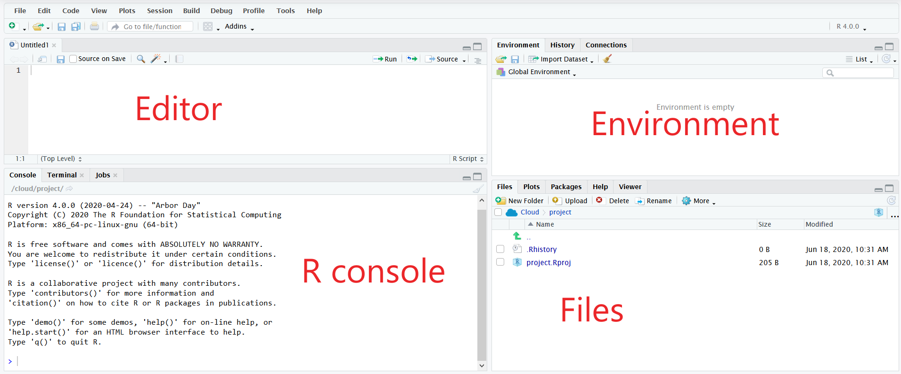
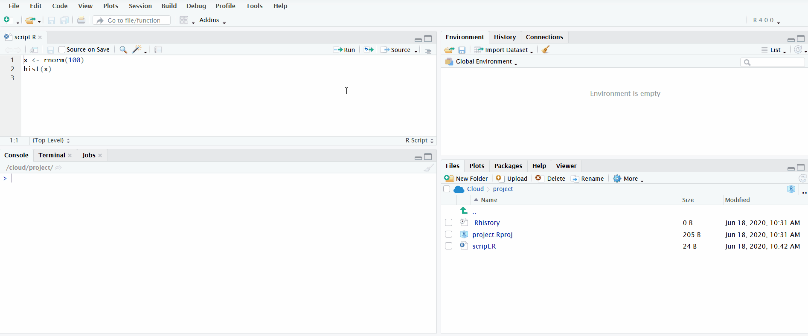
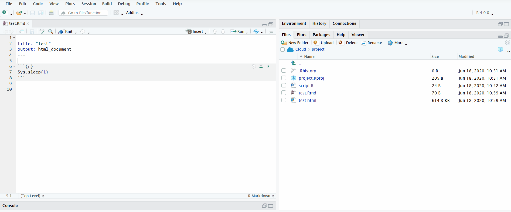
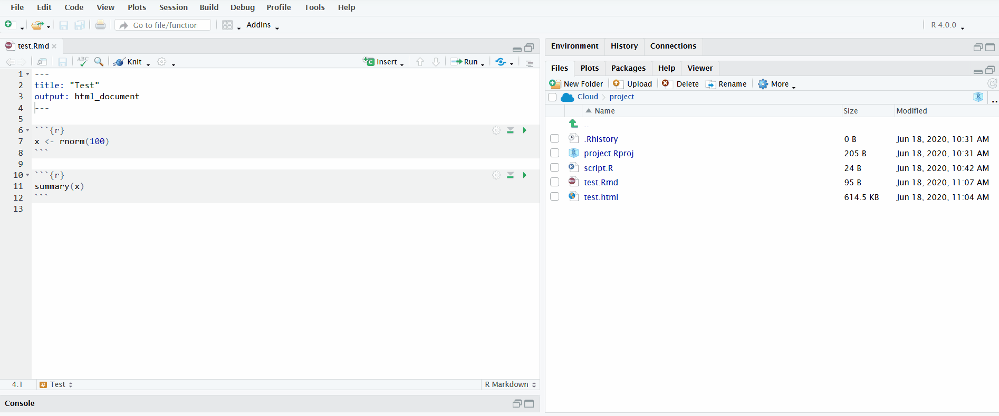
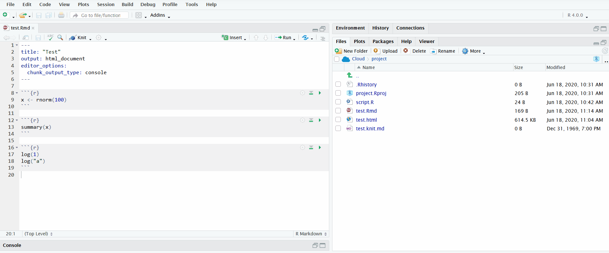

Last updated: 2020-06-29
Checks: 2 0
Knit directory: workflowr-useR2020/
This reproducible R Markdown analysis was created with workflowr (version 1.6.2.9000). The Checks tab describes the reproducibility checks that were applied when the results were created. The Past versions tab lists the development history.
Great! Since the R Markdown file has been committed to the Git repository, you know the exact version of the code that produced these results.
Great! You are using Git for version control. Tracking code development and connecting the code version to the results is critical for reproducibility.
The results in this page were generated with repository version 5cef3eb. See the Past versions tab to see a history of the changes made to the R Markdown and HTML files.
Note that you need to be careful to ensure that all relevant files for the analysis have been committed to Git prior to generating the results (you can use wflow_publish or wflow_git_commit). workflowr only checks the R Markdown file, but you know if there are other scripts or data files that it depends on. Below is the status of the Git repository when the results were generated:
Ignored files:
Ignored: .Rhistory
Ignored: .Rproj.user/
Note that any generated files, e.g. HTML, png, CSS, etc., are not included in this status report because it is ok for generated content to have uncommitted changes.
These are the previous versions of the repository in which changes were made to the R Markdown (analysis/prerequisites.Rmd) and HTML (docs/prerequisites.html) files. If you’ve configured a remote Git repository (see ?wflow_git_remote), click on the hyperlinks in the table below to view the files as they were in that past version.
| File | Version | Author | Date | Message |
|---|---|---|---|---|
| Rmd | c760794 | John Blischak | 2020-06-18 | Add gif’s for prerequisites page. |
| Rmd | 3e12014 | John Blischak | 2020-06-17 | Start prerequisites page. |
To get the most out of attending this tutorial, it will help if you have previous experience with:
The tutorial will take place within the RStudio IDE hosted on RStudio Cloud. Thus it will be advantageous if you are already familiar with the basics of the RStudio IDE.

In the top left is the editor pane. This is where you write your R code that is saved to files on your computer.
In the bottom left is the R console. This is where your R code is executed. You can either directly type commands into the R console, or you can send lines from your scripts to be executed in the console with Ctrl/Cmd+Enter.
In the top right are various panes. Of particular interest are:
Environment - this shows the objects that are currently defined in your R session running in the R console
History - this is the history of commands you have entered in the R console
Git - This pane is only present if a Git repository is present. Thus you won’t see this until later in the tutorial when you create a workflowr project (which creates a Git repository for you)
In the bottom right are various panes. Of particular interest:
Files - The file explorer allows you to navigate directories on your machine and perform common operations like renaming or moving a file. If you click on a file, it will open in the editor pane.
Plots - When you create a plot in the R console, it will be displayed in the Plots pane
Viewer - This displays web content like the HTML created from R Markdown files
A very useful feature for interactively exploring your data while simultaneously recording your steps is the ability to send lines of code from the file open in the Editor directly to the R console to be executed. You can do this by clicking on the button “Run” or using the keyboard shortcut Ctrl/Cmd+Enter.
In the gif below, I demonstrate both methods. First I define the vector x by clicking the “Run” button. Notice how the Environment pane updates with the newly defined object. Second I use the keyboard shortcut Ctrl+Enter to send the second line of code to the R console. This plots a histogram of the data, which is displayed in the Plots pane.

For more information, check out the Software Carpentry lesson on Introduction to R and RStudio.
When you open an R Markdown file in the editor pane, a button named “Knit” will display. If you click on it, it will knit the document to HTML. You can view the progress in the newly created “R Markdown” tab in the bottom left.
In the gif below, I click the “Knit” button to knit the R Markdown file. I include the chunk Sys.sleep(1) so that it pauses long enough for you to see the R Markdown pane appear.

Another option for running the code is to click on the button “Run”. You can run individual chunks or “Run All”. Furthermore, just like R scripts, you can send individual lines to the R console with Ctrl/Cmd+Enter.
In the gif below, I execute all the code chunks by clicking “Run All”. Note that before I do this, I instruct RStudio to send the chunk output to the R console instead of displaying it inline. This makes it easier to interactively develop the code in the R console and keeps the file uncluttered.

Lastly, it is important to understand how to interpret the error messages produced when knitting R Markdown files, which you will use during the tutorial.
In the gif below, I knit an R Markdown file that produces an error trying to run log("a"). The default view only displays the error message. I click on “Output” to see the full log. This informs you the lines in the source R Markdown file to check for the error. Importantly, it doesn’t pinpoint the exact line where the error occurred. Instead it reports the range of lines spanned by the code chunk where the error occurred.
